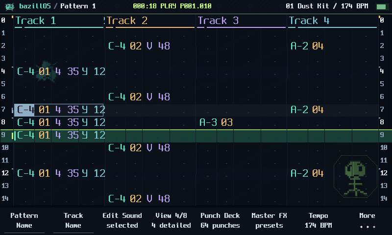
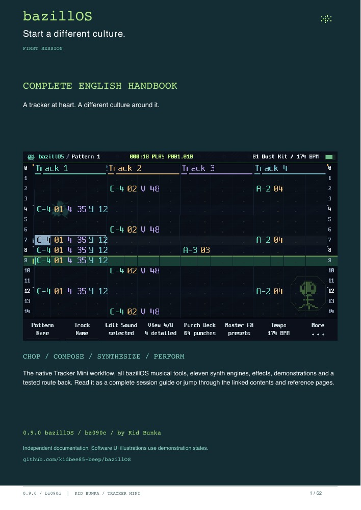

Independent firmware. For the Tracker Mini. Built on Tracker Community Edition.
● CULTURE OBSERVATION WINDOW800 × 480

4 DETAILS ↔ 8 TRACKSTHE BEAT STAYS IN SIGHT.
0.9 / TRACKER MINIbz090c passed the final focused Mini check. Downloads and matching source are below.
TRACKER MINI / 0.9.2 BETA 1 / BZ092A
What’s new in 0.9.2
bazillOS 0.9.2 beta 1 is available for the Polyend Tracker Mini. Download build bz092a and its matching source below.
MIDI routing on all 16 tracks
Open Config → MIDI → Routing track, choose a track, then set Track MIDI In and Track MIDI Out independently. Each direction offers channels 1–16, Off and Legacy. Legacy retains the existing routing behaviour. Use Notes in and MIDI out for the USB or jack connection.
Seven Punch favorites
Go to Pattern → More page 5 (Favs / More). With playback stopped, hold and release a soft key, choose an effect with +/− and tap the same key to save it. While playing, hold the key to punch in on the selected audio track. Release it to end the punch.
Checked on the Mini
Startup and the displayed build were confirmed. USB MIDI In and Out passed on tracks 1 and 16 with the expected channels and no stuck notes. TRS MIDI was also tested.
Our splashscreen, an original QUAD FM mini-track and a small robot saying "Bazillos" - pronounced as one German word. Press Play intro for sound.
Web remix of the source-rendered firmware splash. Original 142BPM QUAD FM composition, rendered on the host. Synthetic robot ident. The Mini boot timing is unchanged.
New tools have their own menu destinations and direct Pattern shortcuts. Explore real source-rendered screens below.
Native firmware drawing code, shown with demonstration data. Software preview; not a camera capture.
CONTAINS CULTURE. PLEASE DO NOT LICK THE SCREEN.
Make a mess. Keep the good bits.
50 + 3
Start with a song.
Fifty genre starters plus three arranged feature demos. Load through Projects, keep a copy, change everything.
64
Perform the mutation.
Punch recipes across eight banks, with track targets, intensity, momentary or latch, and compact coder graphics.
4 OP
Go beyond samples.
QUAD FM joins DREAMS, TIDAL and CROSSBREED alongside the original synth engines. Presets are starting points; the controls remain yours.
NO LECTURE. JUST CULTURE.
The beat keeps rolling.
Menus, new tools and musical games over Kid Bunka’s “0002french”. The film starts with music, visits all eleven synth engines and includes three extra demo previews. The UI tour and beat performance are independent.
Three more cultures.
Original production previews, not Mini recordings. Native projects are included in the demo download.
Night Serum 174 BPM / DNB
Velvet Colony 87 BPM / HIP-HOP
Petri Floor 130.5 BPM / HOUSE-TECHNO
THE FIELD GUIDE / READABLE. SEARCHABLE. YOURS.
From first hit to final mutation.
A 62-page illustrated English handbook covering the core Tracker Mini workflow and the bazillOS tools. Linked contents, all eleven engines, effects, clear routes and practical examples.

Everything in one culture.
Projects, patterns, recording, samples, all playback modes, synth editing and macros. Drum Lab, the shared Chop workspace, Composer, Fill, Arcade Synth, Punch Deck and Master Lab. Native and added effects, parameter names, demos, troubleshooting and rollback.
Return to original Mini 2.2.1 was tested in this project, with normal interface and project audio confirmed afterward. Keep a complete original card backup and a verified Mini updater.
Firmware rollback and restoring original project data are separate. No updater can promise recovery from every hardware fault.
What does rollback preserve?
Reinstalling stock firmware restores the software, not a previous SD-card state. Restore original projects and Workspace from the original backup separately. CE-format patterns and custom engines are not converted backwards by a firmware change.
The installation PDF links the official model-specific recovery instructions. It does not replace the bootloader or write firmware from your browser.
GET THE CULTURE
One build. Clear ingredients.
Firmware, optional projects and matching source. Read the installation guide first.
Check a firmware file locally
Choose an extracted .ptf. The SHA-256 check runs in this browser; the file is not uploaded.
The boundaries are part of the map.
Tracker Mini only. 48 independently adjustable sample slots. Two Step FX columns. Three synth parts sharing the native eight-voice budget. Most compound Step FX and Punch Deck target sample tracks; SPACE also supports internal synths.
TIDAL, CROSSBREED and Spore Dice adapt selected algorithms; they are not complete module ports. CROSSBREED has no vocoder. OG/Tracker+ ports and a third FX lane are outside 0.9.
Independent project, no manufacturer endorsement. Source-available CE terms apply alongside the original component licences; the Polyend binary libraries remain hardware-restricted. Credits and full licence texts accompany the source.
TESTED WITH MUSIC / REPORTED WITH CONTEXT
Plenty of sessions. Clear evidence.
Recent user-reported sessions ran without crashes across the tested playback, performance and save/load workflows. We keep device reports separate from software checks.
On the actual Mini.
Familiar projects, multiple patterns, Save As/reload, repeated project switching, synth auditions, Arcade capture/Undo and Punch holds/latch/release were exercised. Drive, echoes and rolls were compared at 75% and 100%.
Fixes stay visible.
The returned 40-case review recorded 38 passes and two issues. Follow-up checks confirmed the grouped menu, sample fallback and synth icons. The final bz090c check also passed: Composer keeps its controls through repeated Play/Stop and a 70-second preview, then returns normally to Pattern.
Checked in the source.
Controller regressions, bounds, named menu pages, real font/icon drawing and ARM memory/linker checks. These checks support the build; they do not replace real hardware timing or every external setup.
0.9 release notes and known scope
Grouped culture menu with named subpages; reliable synth-to-sample entry; semantic synth icons; unified access to Chop Studio, Slice Lab and Chop Patterns. Composer keeps its controls during transport notifications and continues through workspace autosaves.
Phosphor UI, 4/8-track view, global swing, ready PERC drums and compact writes, 11 synth engines, 64 Punch recipes with balanced controls and coder accents, 12 compound Step FX, musical Arcade capture, Master presets and 50 starters plus 3 feature demos.
Mini only. 48 sample slots, two effect columns, three synth parts and the native shared voice budget. Original backups remain necessary for returning to stock projects.
Feedback, useful bug reports, patch ideas and musical suggestions are always welcome. Tell us what you made, what surprised you, and what should become easier.